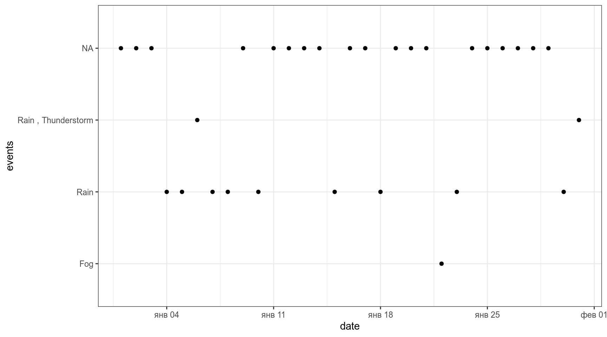
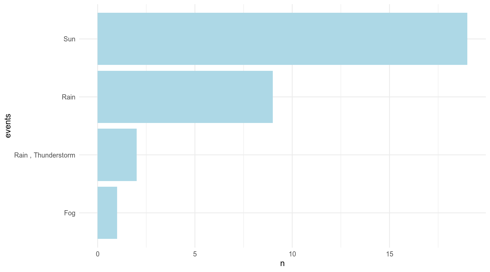
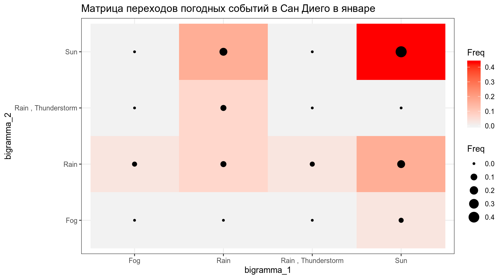
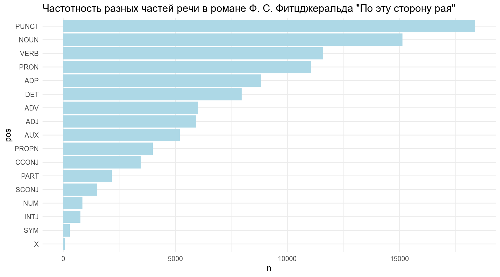
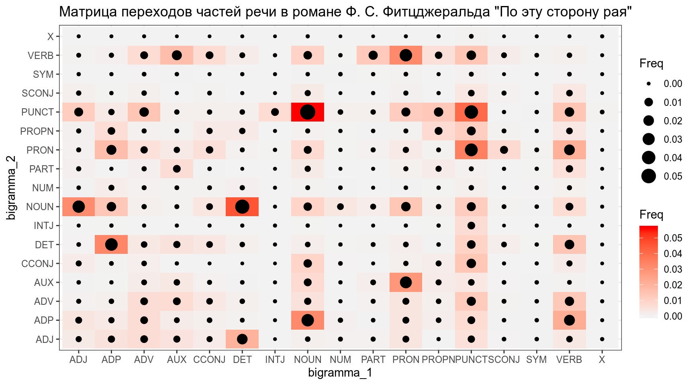
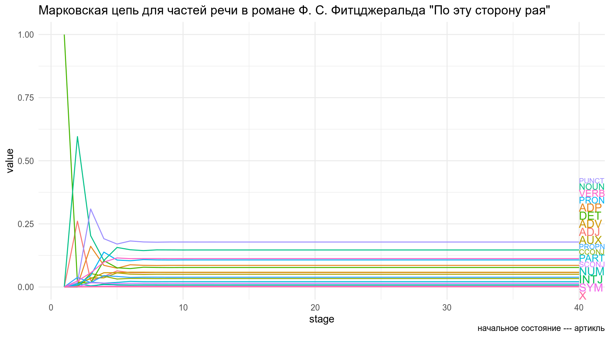
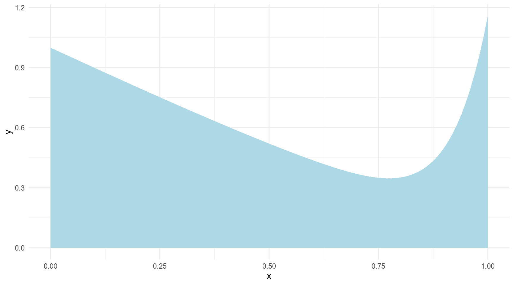
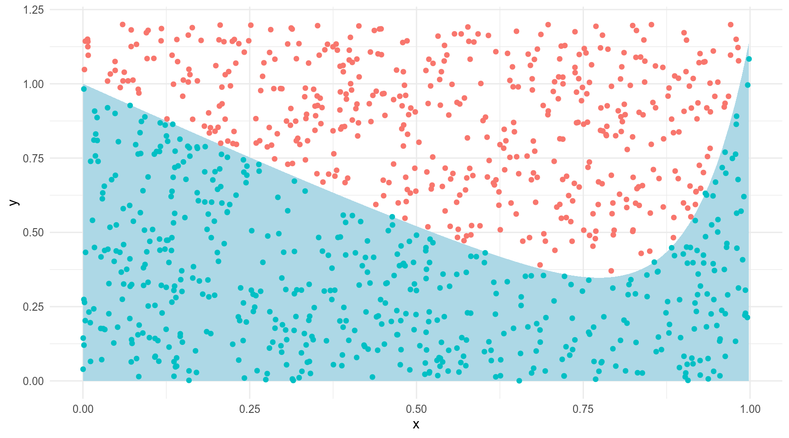

6. Марковские цепи
Г. Мороз
1. Рандомизаторы
1.1 Простой случай
В нашем курсе мы обсуждали несколько рандомизаторов (rnorm(), rbeta() и так далее). Но вернемся к более простому случаю. Сделаем одну выборку из множества, содержащего три элемента:
[1] 5 7 6По умолчанию он выдает множество равное количеству объектов в векторе.
[1] 7Error in sample.int(length(x), size, replace, prob): cannot take a sample larger than the population when 'replace = FALSE'[1] 5 6 6 7Можно задавать вероятности, с которыми рандомизатор вынимает то или иное значение (по умолчанию все исходы равновероятны):
.
5 6 7
0.3284 0.3361 0.3355 .
5 6 7
0.1028 0.2987 0.5985 Записи идентичны:
[1] 1 9 2 5 4 6 8 3 10 7 [1] 5 10 4 1 2 8 9 3 6 7Чтобы фиксировать рандомизатор следует использовать set.seed(). Посмотрите прекрасную работу Бена Мура на тему того, какие кто использует сиды на GitHub.
Иногда хочется, чтобы рандомизатор был одинаковый в R и Python, зачем и как это делать читайте в работе Гертьяна ван ден Бург: блог, гитхаб.
2. Марковские цепи
Марковский процесс
- конечное количество состояний
- вероятность переходов из одного состояния в другое
Славная визуализация (спасибо за ссылку Марине Дубовой)
Возьмем наш датасет с погодой и отфильтруем только Сан Диего:
read_csv("https://raw.githubusercontent.com/agricolamz/2019_BayesDan_winter/master/datasets/weather.csv") %>%
select(city, date, events) %>%
filter(city == "San Diego") ->
weather
weather %>%
ggplot(aes(date, events))+
geom_point()
Давайте считать, что NA — это солнце.
weather %>%
mutate(events = ifelse(is.na(events), "Sun", events)) ->
weather
weather%>%
ggplot(aes(date, events))+
geom_point()Визуализируем частоты разных погодных событий в Сан Диего:
weather %>%
count(events) %>%
mutate(events = reorder(factor(events), n)) %>%
ggplot(aes(events, n))+
geom_col(fill = "lightblue")+
coord_flip()
Визуализируем матрицу последовательных переходов разных погодных событий:
tibble(bigramma_1 = weather$events,
bigramma_2 = lead(weather$events, 1)) %>%
table() %>%
prop.table() %>%
as.data.frame() %>%
ggplot(aes(bigramma_1, bigramma_2, size = Freq, fill = Freq))+
geom_raster()+
geom_point()+
scale_fill_gradient(low="grey95", high="red")+
labs(title = 'Матрица переходов погодных событий в Сан Диего в январе')
Сделаем марковскую цепь и визуализируем ее граф:
MLE Fit
A 4 - dimensional discrete Markov Chain defined by the following states:
Fog, Rain, Rain , Thunderstorm, Sun
The transition matrix (by rows) is defined as follows:
Fog Rain Rain , Thunderstorm Sun
Fog 0.00000000 1.0000000 0.0000000 0.0000000
Rain 0.00000000 0.2222222 0.2222222 0.5555556
Rain , Thunderstorm 0.00000000 1.0000000 0.0000000 0.0000000
Sun 0.05263158 0.2631579 0.0000000 0.6842105
Теперь мы можем предсказать наше следующее состояние \(t_2\) перемножив матрицу начального состояния \(t_1\) (\(1 \times 4\)) на матрицу переходов (\(4 \times 4\)).
\[t_2 = t_1 \times \text{transitional matrix}\]
Предположим, что наше начальное состояние — это дождь Rain:
t_1 <- matrix(c(0, 1, 0, 0), nrow = 1)
t_1 * our_mc$estimate # это особая звездочка из пакета markovchain Fog Rain Rain , Thunderstorm Sun
[1,] 0 0.2222222 0.2222222 0.5555556Понятное дело состояние \(t_3\) это обычное произведение состояния \(t_2\) и матрицы переходов:
\[t_3 = t_2 \times \text{transitional matrix} = t_1 \times \text{transitional matrix} \times \text{transitional matrix} = t_1 \times \text{transitional matrix}^2\]
Используя полученную модель можно вычислите вероятность каждого из погодных событий на 7-ой день после дождя.
Fog Rain Rain , Thunderstorm Sun
[1,] 0.03005657 0.324639 0.07273401 0.5725704Вообще-то, часто так бывает, что цепь сходиться на каком-то состоянии (состояние эквилибриум из домашнего задания) и дальше не изменяется. Давайте Визуализируем 40 состояний цепи, если начальное состояние — дождь.
df <- as.data.frame(t_1)
colnames(df) <- sort(unique(weather$events))
sapply(2:40, function(x){
df[x,] <<- as.data.frame(as.matrix(df[1,]) * (our_mc$estimate^(x-1)))
}) [,1] [,2] [,3] [,4] [,5]
Fog 0 0.02923977 0.02650388 0.03035072 0.0296548
Rain 0.2222222 0.4178038 0.3039872 0.3386555 0.3214342
Rain , Thunderstorm 0.2222222 0.04938272 0.09284528 0.0675527 0.07525677
Sun 0.5555556 0.5035737 0.5766637 0.5634411 0.5736543
[,6] [,7] [,8] [,9] [,10]
Fog 0.03019233 0.03005657 0.03013529 0.03011125 0.03012316
Rain 0.327303 0.324639 0.325609 0.3251911 0.3253493
Rain , Thunderstorm 0.07142982 0.07273401 0.072142 0.07235756 0.07226468
Sun 0.5710748 0.5725704 0.5721137 0.5723401 0.5722628
[,11] [,12] [,13] [,14] [,15]
Fog 0.0301191 0.03012094 0.03012027 0.03012056 0.03012045
Rain 0.3252832 0.3253088 0.3252983 0.3253024 0.3253007
Rain , Thunderstorm 0.07229985 0.07228515 0.07229084 0.07228851 0.07228942
Sun 0.5722979 0.5722851 0.5722906 0.5722885 0.5722894
[,16] [,17] [,18] [,19] [,20]
Fog 0.03012049 0.03012048 0.03012048 0.03012048 0.03012048
Rain 0.3253014 0.3253011 0.3253012 0.3253012 0.3253012
Rain , Thunderstorm 0.07228905 0.0722892 0.07228914 0.07228916 0.07228915
Sun 0.5722891 0.5722892 0.5722891 0.5722892 0.5722892
[,21] [,22] [,23] [,24] [,25]
Fog 0.03012048 0.03012048 0.03012048 0.03012048 0.03012048
Rain 0.3253012 0.3253012 0.3253012 0.3253012 0.3253012
Rain , Thunderstorm 0.07228916 0.07228916 0.07228916 0.07228916 0.07228916
Sun 0.5722892 0.5722892 0.5722892 0.5722892 0.5722892
[,26] [,27] [,28] [,29] [,30]
Fog 0.03012048 0.03012048 0.03012048 0.03012048 0.03012048
Rain 0.3253012 0.3253012 0.3253012 0.3253012 0.3253012
Rain , Thunderstorm 0.07228916 0.07228916 0.07228916 0.07228916 0.07228916
Sun 0.5722892 0.5722892 0.5722892 0.5722892 0.5722892
[,31] [,32] [,33] [,34] [,35]
Fog 0.03012048 0.03012048 0.03012048 0.03012048 0.03012048
Rain 0.3253012 0.3253012 0.3253012 0.3253012 0.3253012
Rain , Thunderstorm 0.07228916 0.07228916 0.07228916 0.07228916 0.07228916
Sun 0.5722892 0.5722892 0.5722892 0.5722892 0.5722892
[,36] [,37] [,38] [,39]
Fog 0.03012048 0.03012048 0.03012048 0.03012048
Rain 0.3253012 0.3253012 0.3253012 0.3253012
Rain , Thunderstorm 0.07228916 0.07228916 0.07228916 0.07228916
Sun 0.5722892 0.5722892 0.5722892 0.5722892 df %>%
mutate(stage = 1:40) %>%
gather(events, value, Fog:Sun) %>%
ggplot(aes(stage, value, color = events))+
geom_line(show.legend = FALSE)+
directlabels::geom_dl(aes(label = events), method = "last.qp")+
labs(title = 'Марковская цепь погодных событий в Сан Диего в январе',
caption = "начальное состояние --- дождь (Rain)")
И люди вообще-то научились вычислять такие вещи на основании цепи:
Fog Rain Rain , Thunderstorm Sun
[1,] 0.03012048 0.3253012 0.07228916 0.5722892Скачайте датасет, который содержит роман “По эту сторону рая” Ф. С. Фицджеральда:
token— словоPOS— часть речи, полученная на основе английской модели UDPIPE.
Визуализируйте частоты частей речи в романе: 
Визуализируйте матрицу последовательных переходов частей речи: 
Сделайте марковскую цепь и визуализируйте ее граф:

Используя полученную модель, вычислите вероятность встретить после артикля (
DET) прилагательное (ADJ) (с точностью до трех знаков после запятой).
Используя полученную модель, вычислите вероятность встретить после артикля прилагательное в четвертом по счету слове (с точностью до трех знаков после запятой).
ADJ ADP ADV AUX CCONJ DET
[1,] 0.06364596 0.07437913 0.05648417 0.05594779 0.03150212 0.0760366
INTJ NOUN NUM PART PRON PROPN
[1,] 0.008021889 0.1565543 0.008617353 0.01814057 0.1067079 0.04168071
PUNCT SCONJ SYM VERB X
[1,] 0.1700765 0.01359084 0.00284206 0.1150473 0.0007247423Визуализируйте 40 состояний цепи, если начальное состояние — артикль (
DET).

Посчитайте фиксированные состояния цепи. В ответе приведите значение для местоимения (с точностью до трех знаков после запятой).
3 Что дальше?
- легко придумать обобщение этой логики на непрерывные данные
- можно придумать вариант, когда мы пытаемся предсказать некоторые ненаблюдаемые вещи на основании наблюдаемых: например, погоду в Сан Диего на основании настроение вашего друга, которому вы каждый день звоните. Это называется скрытые марковские цепи.
- MCMC (Markov Chain Monte Carlo)
3.1 Метод Монте-Карло
Группа методов изучения случайных процессов, которые базируются на:
- возможности производить бесконечного количества случайных переменных
- для известных или новых распределенийы
Представим себе, что у нас есть какой-то интеграл, который мы хотим посчитать. Например такой:
tibble(x = seq(0, 1, length.out = 1000)) %>%
ggplot(aes(x))+
stat_function(fun = function(x){x^12-sin(x)+1}, geom = "area", fill = "lightblue")
Мы можем насэмплировать точек из комбинации двух унимодальных распределений u(0, 1), и u(0, 1.2) и посмотреть, кто попадает в область, а кто нет:
set.seed(42)
tibble(x = runif(1e3, 0, 1),
y = runif(1e3, 0, 1.2),
in_area = y < x^12-sin(x)+1) %>%
ggplot(aes(x, y))+
stat_function(fun = function(x){x^12-sin(x)+1}, geom = "area", fill = "lightblue")+
geom_point(aes(color = in_area), show.legend = FALSE)
Сколько попало?
set.seed(42)
tibble(x = runif(1e3, 0, 1),
y = runif(1e3, 0, 1.2),
in_area = y < x^12-sin(x)+1) %>%
count(in_area)[1] 0.63360.6172254 with absolute error < 6.9e-15А если увеличить количество наблюдений?
set.seed(42)
tibble(x = runif(1e7, 0, 1),
y = runif(1e7, 0, 1.2),
in_area = y < x^12-sin(x)+1) %>%
count(in_area)[1] 0.617240.6172254 with absolute error < 6.9e-15Теперь ваш черед: оцените интеграл функции \(cos(3x)+arctan(7x)\) на промежутке от [0, 5], используя
set.seed(42)и миллион итераций рандомизатора. В ответе приведите разницу между получившейся оценкой и реальным интегралом (до третьего знака после запятой):
MCMC (Markov Chain Monte Carlo)
Вот пример, в интеренете есть еще куча.